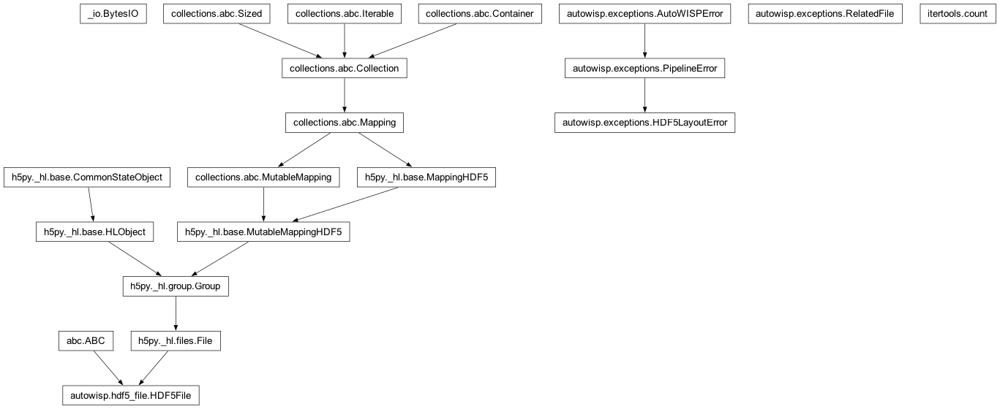
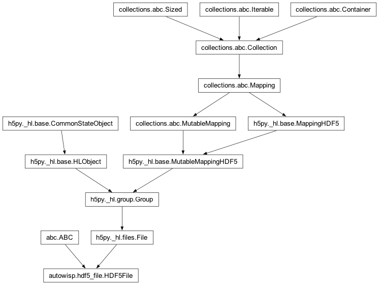

autowisp.hdf5_file module
Class Inheritance Diagram

Define a class for working with HDF5 files.
- class autowisp.hdf5_file.HDF5File(fname=None, mode=None, layout_version=None, **kwargs)[source]
Bases:
ABC,File
Base class for HDF5 pipeline products.
The actual structure of the file has to be defined by a class inheriting from this one, by overwriting the relevant properties and
_get_root_tag_name().Implements backwards compatibility for different versions of the structure of files.
The
FileKindthis product is reported as when it is attached to an error (see__enter__()).None(the default) attaches nothing, so a product only participates once it declares its kind.
- _file_structure
See the first entry returned by get_file_structure.
- _file_structure_version
See the second entry returned by get_file_structure.
- _hat_id_prefixes
A list of the currently recognized HAT-ID prefixes, with the correct data type ready for adding as a dataset.
- Type:
numpy.array
- __enter__()[source]
Open the file and attach it to any error raised while open.
Every pipeline product opened through a
withblock therefore names itself on errors raised below it, without each call site having to scope it explicitly. Files with no name on disk (thememory_onlyin-memory products) attach nothing.The scope is entered before delegating, so a failure in the underlying
__enter__is covered too. Note this does not extend to the file open itself:h5py.Fileopens in the constructor, which runs before any of this (the open-failure path names the file in itsHDF5LayoutErrorinstead).- Returns:
- This file. Returned as
selfrather than as whatever
super().__enter__()hands back (which is the same object) so static analysis keeps seeing the concrete product type instead ofh5py.File.
- This file. Returned as
- Return type:
- __exit__(*exception)[source]
Close the file, then drop it from the ambient error context.
The scope is released after the close so a failure while flushing or closing still carries the file it was closing.
- __init__(fname=None, mode=None, layout_version=None, **kwargs)[source]
Opens the given HDF5 file in the given mode.
- Parameters:
fname – The name of the file to open.
mode – The mode to open the file in (see hdf5.File).
layout_version – If the file does not exist, this is the version of the layout that will be used for its structure. Leave None to use the latest defined.
kwargs – Any additional arguments. Passed directly to h5py.File.
- Returns:
None
- _flag_required_attribute_parents()[source]
Flag attributes whose parents must exist when adding the attribute.
The file structure must be fully configured before calling this method!
If the parent is a group, it is safe to create it and then add the attribute, however, this in is not the case for attributes to datasets.
Add an attribute named ‘parent_must_exist’ to all attribute configurations in self._file_structure set to False if and only if the attribute parent is a group.
- abstract classmethod _get_root_tag_name()[source]
The name of the root tag in the layout configuration.
- abstract classmethod _product()[source]
The pipeline key of the product held in this type of HDF5 files.
- static _replace_nonfinite(data, expected_dtype, replace_nonfinite)[source]
Return (copy of) data with non-finite values replaced.
- _write_text_to_dataset(dataset_key, text, if_exists='overwrite', **substitutions)[source]
Adds ASCII text/file as a dateset to an HDF5 file.
- Parameters:
dataset_key – The key identifying the dataset to add.
text – The text or file to add. If it is an open file, the contents is dumped, if it is a python2 string or a python3 bytes, the value is stored.
if_exists – See add_dataset().
substitututions – Any arguments that should be substituted in the dataset path.
- Returns:
None
- add_attribute(attribute_key, attribute_value, if_exists='overwrite', **substitutions)[source]
Adds a single attribute to a dateset or a group.
- Parameters:
attribute_key – The key in _destinations that corresponds to the attribute to add. If the key is not one of the recognized keys, h5file is not modified and the function silently exits.
attribute_value – The value to give the attribute.
if_exists –
What should be done if the attribute exists? Possible values are:
- ignore:
do not update but return the attribute’s value.
- overwrite:
Change the value to the specified one.
- error:
raise an exception.
substitutions – variables to substitute in HDF5 paths and names.
- Returns:
The value of the attribute. May differ from attribute_value if the attribute already exists, if type conversion is performed, or if the file structure does not specify a location for the attribute. In the latter case the result is None.
- Return type:
unknown
- add_dataset(dataset_key, data, *, if_exists='overwrite', unlimited=False, shape=None, dtype=None, **substitutions)[source]
Adds a single dataset to self.
If the target dataset already exists, it is deleted first and the name of the dataset is added to the root level Repack attribute.
- Parameters:
dataset_key – The key identifying the dataset to add.
data – The values that should be written, a numpy array with an appropriate data type or None if an empty dataset should be created.
if_exists – See same name argument to add_attribute.
unlimited (bool) – Should the first dimension of the dataset be unlimited (i.e. data can be added later)?
shape (tuple(int,...)) – The shape of the dataset to create if data is None, otherwise the shape of the data is used. Just like if data is specified, the first dimension will be ignored if unlimited is True. It is an error to specify both data and shape!
dtype – The data type for the new dataset if the data is None. It is an error to specify both dtype and data!
substitututions – Any arguments that should be substituted in the dataset path.
- Returns:
None
- add_file_dump(dataset_key, fname, if_exists='overwrite', delete_original=True, **substitutions)[source]
Adds a byte by byte dump of a file to self.
If the file does not exist an empty dataset is created.
- Parameters:
fname – The name of the file to dump.
dataset_key – Passed directly to dump_file_like.
if_exists – See same name argument to add_attribute.
delete_original – If True, the file being dumped is deleted (default).
substitutions – variables to substitute in the dataset HDF5 path.
- Returns:
None.
- add_link(link_key, if_exists='overwrite', **substitutions)[source]
Adds a soft link to the HDF5 file.
- Parameters:
link_key – The key identifying the link to create.
if_exists – See same name argument to
add_attribute().substitutions – variables to substitute in HDF5 paths and names of both where the link should be place and where it should point to.
- Returns:
The path the identified link points to. See if_exists argument for how the value con be determined or None if the link was not created (not defined in current file structure).
- Return type:
- Raises:
IOError – if an object with the same name as the link exists, but is not a link or is a link, but does not point to the configured target and if_exists == ‘error’.
- check_for_dataset(dataset_key, must_exist=True, **substitutions)[source]
Check if the given key identifies a dataset and it actually exists.
- Parameters:
dataset_key – The key identifying the dataset to check for.
must_exist – If True, and the dataset does not exist, raise IOError.
substitutions – Any arguments that should be substituted in the path. Only required if must_exist == True.
- Returns:
None
- Raises:
- static collect_columns(destination, name_head, name_tail, dset_name, values)[source]
If dataset is 1D and name starts and ends as given, add to destination.
This function is intended to be passed to h5py.Group.visititems() after fixing the first 3 arguments using functools.partial.
- Parameters:
destination (pandas.DataFrame) – The DataFrame to add matching datasets to. Datasets are added with column names given by the part of the name between name_head and name_tail.
name_head (str) – Only datasets whose names start with this will be included.
name_tail (str) – Only datasets whose names end with this will be included.
dset_name (str) – The name of the dataset.
values (array-like) – The values to potentially add as the new column.
- Returns:
None
- delete_columns(parent, name_head, name_tail, dset_name)[source]
Delete 1D datasets under parent if name starts and ends as given.
- delete_dataset(dataset_key, **substitutions)[source]
Delete obsolete HDF5 dataset if it exists and update repacking flag.
- Parameters:
dataset_key – The key identifying the dataset to delete.
- Returns:
Was a dataset actually deleted?
- Return type:
- Raises:
Error.HDF5 – if an entry already exists at the target dataset’s location but is not a dataset.
- dump_file_or_text(dataset_key, file_contents, if_exists='overwrite', **substitutions)[source]
Adds a byte-by-byte dump of a file-like object to self.
- Parameters:
dataset_key – The key identifying the dataset to create for the file contents.
file_contents – See text argument to
_write_text_to_dataset(). None is also a valid value, in which case an empty dataset is created.if_exists – See same name argument to add_attribute.
substitutions – variables to substitute in the dataset HDF5 path.
- Returns:
Was the dataset actually created?
- Return type:
(bool)
- abstract property elements
Identifying strings for the recognized elements of the HDF5 file.
Shoul be a dictionary-like object with values being a set of strings containing the identifiers of the HDF5 elements and keys:
- dataset: Identifiers for the data sets that could be included in
the file.
- attribute: Identifiers for the attributes that could be included
in the file.
- link: Identifiers for the links that could be included in
the file.
- get_attribute(attribute_key, default_value=None, **substitutions)[source]
Returns the attribute identified by the given key.
- Parameters:
attribute_key – The key of the attribute to return. It must be one of the standard keys.
default_value – If this is not None this values is returned if the attribute does not exist in the file, if None, not finding the attribute rasies IOError.
substitutions – Any keys that must be substituted in the path (i.e. ap_ind, config_id, …).
- Returns:
The value of the attribute.
- Return type:
value
- Raises:
- get_dataset(dataset_key, expected_shape=None, default_value=None, **substitutions)[source]
Return a dataset as a numpy float or int array.
- Parameters:
dataset_key – The key in self._destinations identifying the dataset to read.
expected_shape – The shape to use for the dataset if an empty dataset is found. If None, a zero-sized array is returned.
default_value – If the dataset does not exist, this value is returned.
substitutions – Any arguments that should be substituted in the path.
- Returns:
A numpy int/float array containing the identified dataset from the HDF5 file.
- Return type:
numpy.array
- Raises:
- get_dataset_creation_args(dataset_key, **path_substitutions)[source]
Return all arguments to pass to create_dataset() except the content.
- Parameters:
dataset_key – The key identifying the dataset to get creation args for.
path_substitutions – In theory the dataset creation arguments can depend on the full dataset path (c.f. srcextract.sources).
- Returns:
All arguments to pass to create_dataset() or require_dataset() except: name, shape and data.
- Return type:
- get_element_path(element_id, **substitutions)[source]
Return the path to the given element (.<attr> for attributes).
- Parameters:
substitutions – Arguments that should be substituted in the path. If none are given, the path is returned without substitutions.
- Returns:
A string giving the path the element does/will have in the file.
- Return type:
- classmethod get_element_type(element_id)[source]
Return the type of HDF5 entry that corresponds to the given ID.
- Parameters:
element_id – The identifying string for an element present in the HDF5 file.
- Returns:
- The type of HDF5 structure to create for this element.
One of: ‘group’, ‘dataset’, ‘attribute’, ‘link’.
- Return type:
hdf5_type
- abstract classmethod get_file_structure(version=None)[source]
Return the layout structure with the given version of the file.
- Parameters:
version – The version number of the layout structure to set. If None, it should provide the default structure for new files (presumably the latest version).
- Returns:
The dictionary specifies how to include elements in the HDF5 file. The keys for the dictionary should be one in one of the lists in self.elements and the value is an object with attributes decsribing how to include the element. See classes in :mod:database.data_model for the provided attributes and their meining.
The string is the actual file structure version returned. The same as version if version is not None.
- Return type:
- read_fitsheader_from_dataset(dataset_key, **substitutions)[source]
Reads a FITS header from an HDF5 dataset.
The inverse of
write_fitsheader_to_dataset().- Parameters:
dataset_key – The key identifying the dataset containing the header.
- Returns:
The FITS header contained in the given dataset.
- Return type:
fits.Header
- related_file_kind = None
- write_fitsheader_to_dataset(dataset_key, fitsheader, **kwargs)[source]
Adds a FITS header to an HDF5 file as a dataset.
- Parameters:
dataset_key (str) – The key identifying the dataset to add the header to.
fitsheader (fits.Header) – The header to save.
kwargs – Passed directly to
_write_text_to_dataset().
- Returns:
None